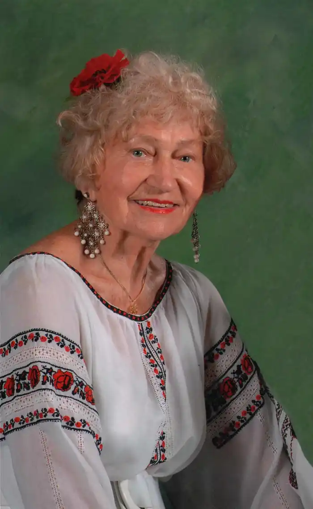
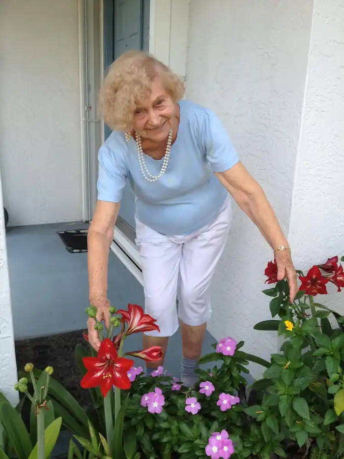

Ганна Черінь (Галина Грибінська) народилась 29 квітня 1924 р. в Україні. Писати вірші почала з дитинства. Після закінчення школи вступила до Київського університету, але Друга світова війна перервала навчання. Ганна Черінь опинилась у Німеччині в таборах для "переміщених осіб". У 1949 р. тут вийшла перша збірка її поезій "Крещендо".
У 1950 р. Г.Черінь переселилась до США. 1953 р. закінчила факультет лінгвістики Чиказького університету. 1966 р. здобула другий диплом за спеціальністю "бібліотекар". Очолила при бібліотеці Чиказького університету відділ обміну з закордонними бібліотеками, зібрала тут велику колекцію україністики, намагалась встановити обмін книжками з українськими бібліотеками.
Ганна Черінь — авторка 26 книжок. З них головні: збірки поезій "Чорнозем" (1962), "Вагонетки" (1969), віршований роман "Слова" (1980) та інші. З 1988 року переїхала у штат Флорида (США), де активно працює в місцевому українському осередку ім. Св. Андрія. Крім віршів і художньої прози, писала вона гумористичні твори та п'єси, а з мандрів по світу, які вона дуже полюбляє, привезла додому багато яскравих вражень, на основі яких написала дві книги художніх нарисів "їдьмо зі мною" (1965) та "їдьмо зі мною знову!" (1990). Коли б наші читачі (насамперед юні) мали змогу прочитати їх, то з розповідей мандрівниці Ганни Черінь та фотоілюстрацій її чоловіка Степана Панківа довідались би чимало цікавого про життя і побут та про культуру інших народів світу. Адже досі не багатьом українцям пощастило відвідати такі далекі куточки нашої планети, як Гаваї, Фіджі, Нова Зеландія, Мехіко, Австралія, Японія, Китай. Вірші й оповідання Ганни Черінь добре відомі маленьким читачам Америки й інших країн, де живуть українські родини, а ми лише тепер починаємо знайомитися з ними. У різних країнах світу вийшли такі книжки письменниці: "Братик і сестричка" (1960), "Листування" (1966), "Пригоди української книжки" (1972), "Щоденник школярки Мілочки" (1979), "Українська кров" (1982), "Українські діти". У цих дитячих книжечках, пройнятих великою любов'ю авторки до України, є немало чудових оповідань, зокрема й про Тараса Шевченка (як в останній із названих), які теж варто було б перевидати для дітей України. Ганна Черінь любить дітей, добре знає їх психологію і дбає про виховання у них національної свідомості. Вона часто спілкується зі своїми маленькими читачами, дарує їм книжки, до речі, видані за власний кошт. 2006 року у Києві презентувалася нова книга Ганни Черінь "Дев'яте чудо", до якої ввійшли 5 подорожніх нарисів, один з яких присвячений Україні. Померла 20 липня 2016 року.